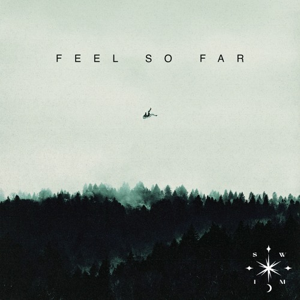
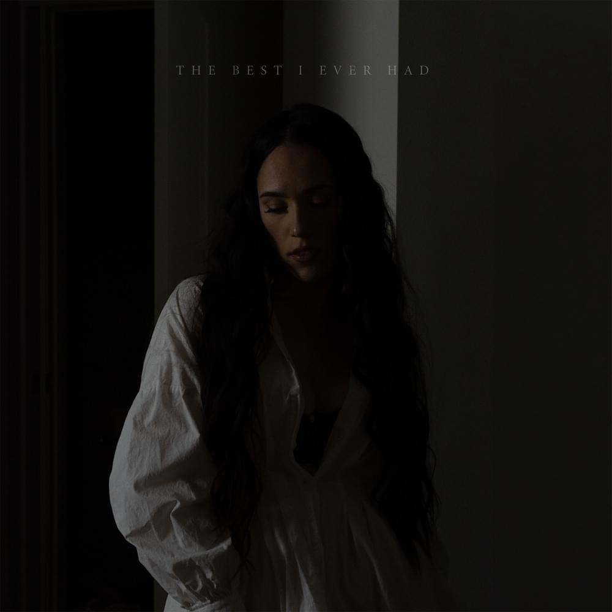

Hi everyone! I am a travelling and music lover, and I am pursuing a Global Bachelor in Business Administration (GBBA) at ESSEC Business School! Welcome to my page!
You can check out my uni here!I am going to tell you more about myself! I grew up in a small city in the South of France, Gap, located between the sea and the mountains. This is somehow great because I can go skiing in winter and go to the sea in summer (it is a 2h30 drive from my place)! I speak French and English fluently, and I am currently learning Chinese and Spanish. I have different passions which you can discover if you scroll down my page!
I like a lot of things, and particularly sports. I used to ski a lot, swim, horse ride, and run but I stopped when I moved to Cergy for my studies. Apart from that, I like to read, try new food (Asian food 🍜 is my favorite), take pictures, and I am an automobile lover 🏎️! But most of all, I like to travel ✈️! To be honest, I like to say that every problem in life can be solved by traveling, which is probably why my money travels faster than me lol!
Pictures of my favorite trip in this album!When I was younger, I played clarinet for over 10 years. I stopped playing when I was in my last year of high school. I also took a liking to listening to music whenever I can. Now, it helps me relax when I'm stressed. I really like to listen to chill songs. Here are two of them! You can listen to them by clicking on the images 🙃
 